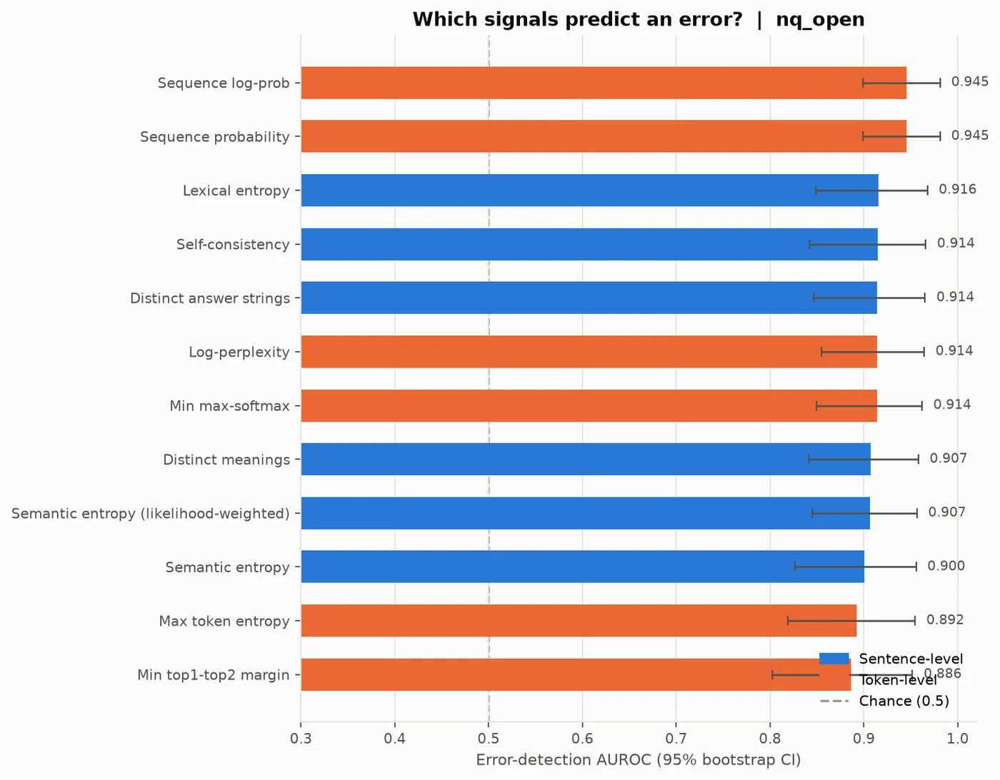

The free uncertainty signal kept up with the expensive one
I wanted to know whether a small local LLM can tell when it is about to be wrong, and how much that knowledge costs. The method everyone reaches for, semantic entropy, takes ten extra generations and an NLI model. A number you get for free from the answer you were already generating did about as well. The interesting part is why.
The question
If a model gives you an answer, can a cheap signal rank its wrong answers above its right ones, and is the expensive signal worth paying for? That is the practical question behind every "should this answer be shown, flagged or escalated?" decision.
The setup
- Model:
Qwen2.5-1.5B-Instructin fp16 on a single 8 GB laptop GPU (RTX 2070 Max-Q). - Tasks: NQ-Open (closed-book factual questions, short answers) and GSM8K (grade-school maths with chain of thought).
- Free signals: computed from the greedy answer itself: sequence log-probability, perplexity, token entropy, softmax margins.
- Expensive signals: 10 extra samples at temperature 1.0, then semantic entropy, which groups samples by meaning using an NLI model (
nli-deberta-v3-small) and measures how spread out the meanings are. - Metric: error-detection AUROC, with wrong answers as the positive class. 0.5 is a coin flip, 1.0 ranks every wrong answer above every right one. Every threshold is fitted on a dev split and reported on a held-out test split, with 95% bootstrap intervals.
Code, raw per-question records and the generated report are in llm-uncertainty-quantification.
The result
| Task (test split) | Best free signal | Semantic entropy | Best sampled signal |
|---|---|---|---|
| NQ-Open100 questions | 0.94595% CI 0.899–0.981 | 0.90095% CI 0.826–0.956 | 0.916lexical entropy |
| GSM8K50 problems | 0.82895% CI 0.684–0.945 | 0.79495% CI 0.659–0.911 | 0.884lexical entropy |
On factual questions, sequence log-probability from the single greedy pass came out on top. On maths, signals built from the samples led. In both tasks the confidence intervals overlap, so the honest reading is a tie on factual QA, not a win. A tie is still the headline: the free signal costs nothing beyond the answer you were already generating, while the expensive one costs ten more generations and an NLI pass.

The surprise: semantic clustering did not help
Look at the blue bars again. Semantic entropy (0.900) did not beat lexical entropy (0.916), which is the same calculation on exact answer strings, with no NLI at all. The gap is within noise, but it points the wrong way: semantic clustering exists to merge answers like "Paris" and "Paris, France" so that harmless rewording does not look like uncertainty, and that should have helped. On GSM8K it trailed by more (0.794 against 0.884).
The per-question records suggest why. By design the NLI step can only merge distinct answer strings, never split them, and across all 200 NQ-Open questions (dev and test together) it merged them in 87. Some merges are exactly what you want: "neuron" and "neurons", "two years" and "2 years". Many are not:
| Question | What the 10 samples said | Meanings found |
|---|---|---|
| who has won more national championships michigan or ohio state | michigan ×4, ohio state ×6 | 1 |
| what is the baby elephants name in jungle book | baloo ×9, bagheera ×1 | 1 |
| who sings you can't get what you want | 9 different answers, from Madonna to Guns N' Roses | 2 |
When contradictory answers become one meaning, semantic entropy reports the model as certain at exactly the moment it is torn. All three answers above were wrong. That is the worst possible failure for an error detector: confidence on the errors.
The merging is not spread evenly. It hit 54% of "who" questions (47 of 87) but only 11% of "when" questions (4 of 37). My working explanation: each NLI comparison is conditioned on the question, so the two texts being compared are mostly identical and differ only by a name, and a small entailment model reads two near-identical sentences as entailment. It is not only names, though: on GSM8K the same step merged distinct numbers in 18 of 100 problems. I have not isolated the cause with an ablation yet, so treat this as a hypothesis rather than a finding.
Where sampling did earn its cost
On GSM8K, agreement between samples is a strong signal: majority voting over 10 samples lifts accuracy from 0.56 to 0.66. The useful question there is not "free or expensive" but "when to pay". An uncertainty-gated cascade answers greedily, checks the free sequence log-probability, and only samples when that answer looks shaky. The escalation threshold is fitted on the dev split.
| Policy (GSM8K test) | Accuracy | Generations per question |
|---|---|---|
| Greedy only | 0.56 | 1.0 |
| Always sample 10 and vote | 0.66 | 11.0 |
| Cascade gated on the free signal | 0.66 | 4.8 |
The cascade escalated 38% of problems and matched always-sampling accuracy with 44% of the generations. With 50 test problems, one problem is worth 0.02 accuracy, so read this as "most of the gain for under half the compute", not as an exact figure.
How I nearly got this wrong. My first version of this cascade was gated on lexical entropy, picked because it had the best AUROC on the test split. That is two mistakes in one: choosing anything by its test score is leakage, and lexical entropy needs the ten samples before it can decide whether to take them, so the "savings" were not real. An independent review caught it. Gating on the free signal with everything fitted on dev turned out no worse, and cheaper.
What I would do in production
- Start with the free signal. Sequence log-probability is already in your logits. Log it on every response before you build anything more expensive.
- Pay for sampling only behind a gate, and only on tasks where agreement between samples carries signal, such as reasoning with checkable answers.
- If you use semantic entropy, audit the clustering. Track how often meaning clusters are fewer than distinct answers, and read a sample of the merges. A rate like 87 in 200 is a warning, not a detail.
Limits
- Small samples. 100 test questions on NQ-Open and 50 on GSM8K. Intervals span roughly ±0.1 AUROC, so I do not claim an ordering between signals inside that band, and I have not run a paired test between them.
- A 1.5B model. Closed-book accuracy on NQ-Open was only 14% on the test split. Results may differ on larger models.
- Exact-match grading. A correct answer phrased outside the alias list counts as wrong, which adds noise to every number here.
- One small NLI model. A larger entailment model, or comparing answers without the question attached, might merge less. That is the next experiment.
Code, per-question records and the full report: github.com/trohit920/llm-uncertainty-quantification.